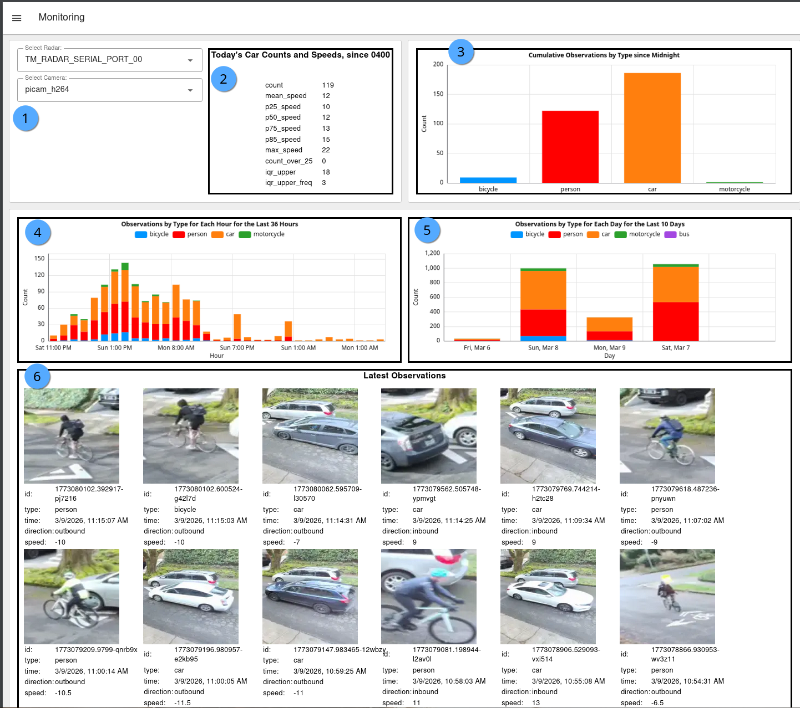

Monitoring¶
On-device Monitoring dashboard
Success
The local, on-device Traffic Monitor dashboard is available by connecting directly to your traffic monitor via a web browser.
The Monitoring tab display counts and descriptive statistics among all your sensors.
Sample screenshot¶

Descriptions¶
- Select your Radar and Camera in case you have multiple sensors on the unit. Sensors need to be defined and enabled in the Node-RED Config.
- Displays
carobject speed counts and descriptive statistics for those that moved throughzone_radarsince 0400 local time. Stats include: - count: Total count through valid area
- mean_speed: Average speed among all cars
- p25_speed: 25th Percentile speed, also known as first quartile (Q1)
- p50_speed: 50th Percentile speed, also known as median speed
- p75_speed: 75th Percentile speed, also known as third quartile (Q3)
- p85_speed: 85th Percentile speed
- max_speed: Maximum speed
- count_over_25: Static set number for maximum speed (25 in set system; e.g. 25 mph)
- iqr_upper: Interquartile range (IQR) calculated as p75 + 1.5 * IQR
- iqr_upper_freq: (frequency of cars above the iqr_upper) Count of vehicles driving above the iq_upper (considered outliers that are significantly faster than other vehicles)
- Daily cumulative counts for all Frigate-enabled objects since 0400 local time.
- Hourly cumulative counts by object for the last 36 hours.
- Daily cumulative counts by object for the last 10 days.
- Latest observations (to display images, Frigate snapshots must be enabled).